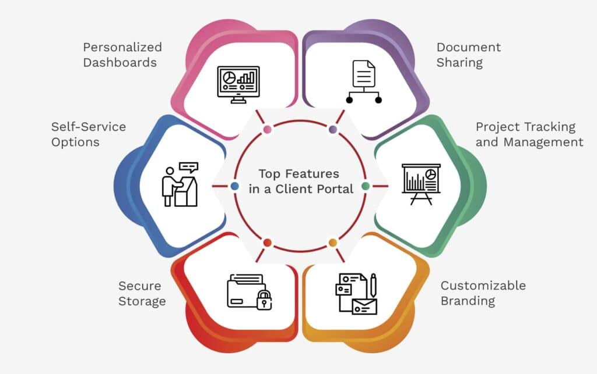

Web Portal
Category: Web Presence & Information Systems
Definition
A Web Portal is a specially designed website that brings information from diverse sources, such as emails, online forums, and search engines, together in a uniform way. It serves as a personalized gateway to help users find what they need in one place.
Key Features
Portals are distinguished from standard websites by three main characteristics:
- Personalization: Users can often customize the layout or content (e.g., choosing which news categories to see).
- Authentication: Portals almost always require a login to provide user-specific data (like a student portal showing only your grades).
- Aggregation: They pull "feeds" or data from other systems into one dashboard.
Types of Portals
Portals can be categorized based on their audience:
- Public Portals: General-purpose sites like Yahoo or MSN that provide news, weather, and mail to everyone.
- Enterprise/Corporate Portals: Internal "Intranet" portals used by employees to access company-specific tools and documents.
- Vertical Portals (Vortals): Specialized portals focused on a specific industry or niche (e.g., a medical portal for doctors).
Visual Comparison: Website vs. Portal
A website is usually a destination for a specific brand's content, while a portal is a launchpad for many different services.
